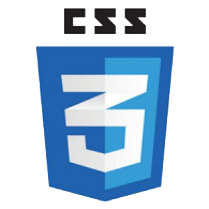

¿Por que elegimos
ser Cooperativa?
 Farid Diego Astorga
Farid Diego Astorga Dario Matias Portal
Dario Matias Portal¿Que es una Empresa
Cooperativa?
cooperativismo promueve formas de organización que potencian el trabajo colaborativo y mejora, según nuestro modo de ver, los procesos de desarrollo. Las cooperativas son empresas democráticas, que se interesan por el desarrollo de la comunidad en la que viven.
¿Qué son las cooperativas
de Tecnología,
Innovación y Conocimiento?
Son empresas que se dedican a brindar soluciones informáticas a otras organizaciones, empresas o personas. El trabajo que realizan consiste en el desarrollo de software, es decir, la creación de sistemas que posibilitan la realización de una tarea específica. Estas empresas se dedican al diseño de estos programas y a garantizar su correcta implementación.
Valores y Principios
Valores
- Ayuda mutua
- Responsabilidad
- Democracia
- Igualdad
- Equidad
- Solidaridad
Principios
- Libre Adhesión
- control democratico de los socios
- participacion economica de los socios
- autonomia e independencia
- educacion, entrenamiento e informacion
- cooperacion entre cooperativas
- compromiso con la comunidad
¿Qué es Dropbox?
Se trata de una herramienta de sincronización de archivos a través de un disco duro o directorio virtual. Permite disponer de un directorio de archivos (de cualquier tipo) de forma remota y accesible desde cualquier ordenador. Es decir, crea una carpeta en nuestra Pc y realiza una copia a través de Internet de todos los archivos que depositemos en ella.


Caracteristicas de Dropbox
- Es compattible con sistemas Windows, Linux, iOS, Android y Blackberry
- Se sincroniza a traves de una carpeta fija donde se puede colocar todos los datos.
- Se puede navegar entre los archivos en una interfaz minimalista.
- El usuaario puede compartir archivos y carpetas con otras ersonas y hasta con enlaces publicos.
- Ofrece 500MB adicionales por cada persona que use tu enlace para crear una cuenta.
- Se puede navegar entre los archivos en una interfaz minimalista.
- Puedes almacenar hasta 18GB.
- Es buen soporte para aplicaciones.
- Se puede adquirir 50GB por US$99 al año. 100GB por US$199
Tecnologías del lado del cliente
html
Lenguaje de marcado predominante para la elaboración de páginas web. HTML5 es la última evolución de la norma que define HTML.

css
Hace referencia a un lenguaje de hojas de estilos usadas para describir la presentación semántica (aspecto y formato) de un documento escrito en lenguaje de marcas. CSS3 es el último estandar de CSS.
JavaScript
Lenguaje de programación interpretado que permite mejorar la interfaz de usuario y páginas web dinámicas. Existe una forma de JavaScript del lado del servidor (Server-side JavaScript o SSJS).
Jquery
Biblioteca de JavaScript, que permite simplificar la manera de interactuar con los documentos HTML, manipular el arbol DOM, manejar eventos, desarrollar animaciones (FLV) y agregar interacción con la tecnica AJAX a páginas web.
Ajax
Técnica de desarrollo web para crear aplicaciones interactivas. Es posible realizar cambios en las páginas sin necesidad de recargarlas, mejorando la interactividad, velocidad y usabilidad en las aplicaciones.
Herramientas adicionales
PHPMyAdmin
PhpMyAdmin es una herramienta de software libre escrito en PHP compatible con una amplia gama de operaciones de MySQL. Operaciones de uso frecuente se puede realizar mediante la interfaz de usuario, manteniendo la capacidad de ejecutar directamente cualquier sentencia SQL.
FileZilla
Filezilla es una aplicación para la transferencia de archivos por FTP, de código abierto de distribución gratuita en los términos de Licencia Pública General de GNU.
El FTP es un sistema que nos permite de forma cómoda subir o bajar archivos a otra ubicación.

XAMPP
XAMPP es una forma fácil de instalar la distribución Apache que contiene MySQL, PHP y Perl. XAMPP es realmente simple de instalar y usar - basta descargarlo, extraerlo y comenzar.